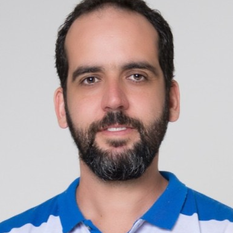
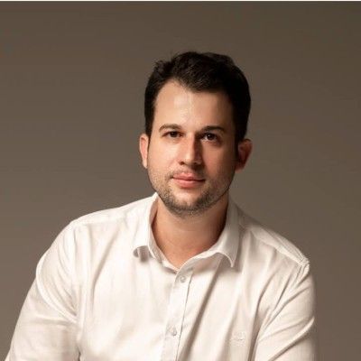
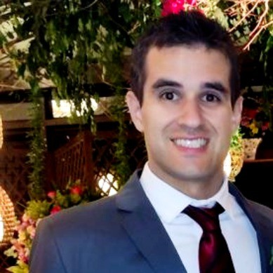

Carlos Antonio Ribeiro Duarte
Universidade Federal de Catalão
Descrição breve da atuação, linha principal de pesquisa e área de especialidade.

Universidade Federal de Catalão
Atuação em projetos conjuntos, modelagem e simulação aplicada.
Universidade Federal de Uberlândia
Pesquisa em CFD, fenômenos interfaciais e aplicações de IA.

Universidade Federal de Uberlândia
Colaboração em escoamentos multifásicos e otimização de processos.

Universidade Federal de Uberlândia
Desenvolvimento de modelos para manufatura aditiva.